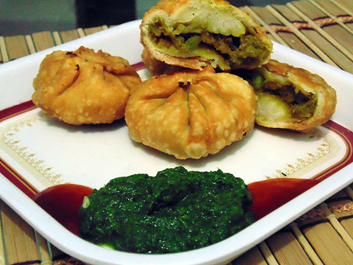

Tuver lilva kachori recipe |
| Rateing |
| prep time:20 minit |
| cook time:30 minit |
| total time:50 minit |
|  |
Ingredients: |
500 gm Tuver (Pigeon pea)
1 tbsp Ginger chili paste
Salt to taste
Pinch of Cumin seeds
Pinch of Asafetida
½ tsp Turmeric powder
1 tsp Garam masala
1 tsp Lemon juice
½ tbsp Coriander leaves (chopped)
1 tbsp oil
For Dough
300 gm all purpose flour (maida)
Salt to taste
1 tbsp Ghee
Water according to requirement
4-5 drop oil
Oil for frying
|
Instructions: |
|
Method for Dough Sieve flour and add salt, ghee in it. Mix and add water to make dough. Dough should be not more soft and hard. Add oil and knead very well. Keep a side. for Stuffing Crush tuver in a chili cutter. Heat oil in a pan at slow flame. Add cumin seeds in it. When it is spluttering, add asafetida and turmeric powder. Also mix tuver, ginger chili paste and salt. Cover lid and cook till it becomes soft. Remove lid and mix garam masala and lemon juice. Cook for 2-3 minutes and add coriander leaves in it. Methods For Kachori Make medium balls from dough and roll out like small puri. Feel stuffing in puri. Cover it like potli or round shape. If you make potli , seal all edge properly. Heat oil in a pan at medium flame. Deep fry kachori till golden brown appearance. |
video: |